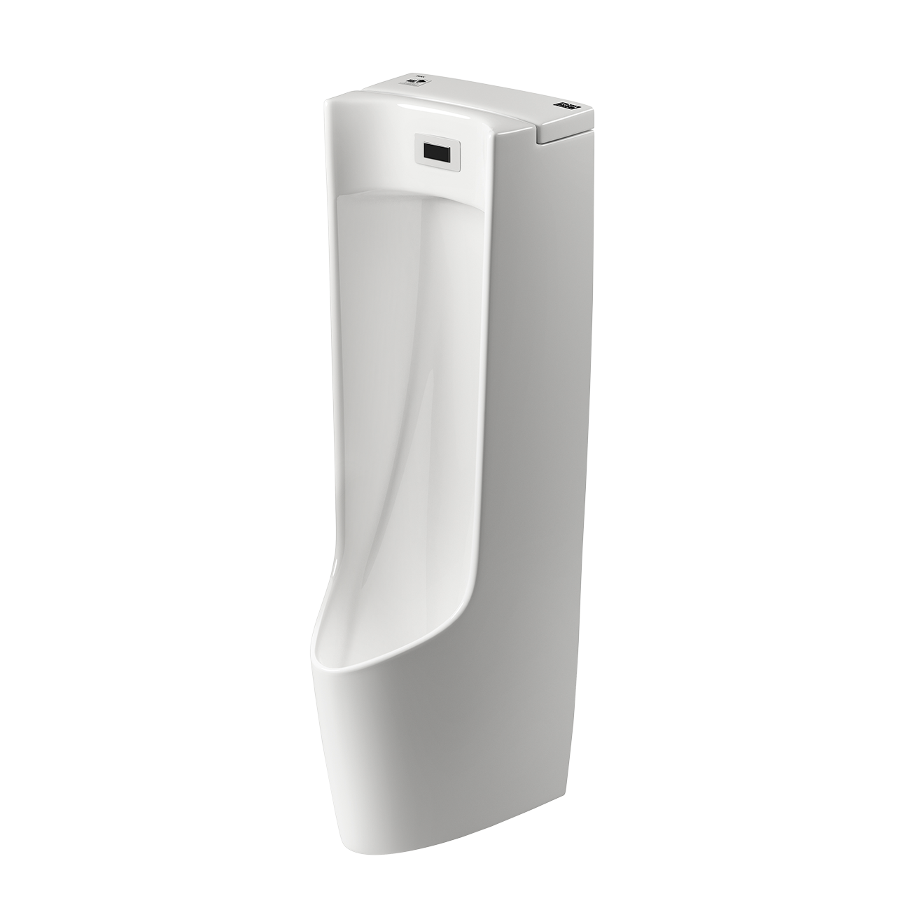
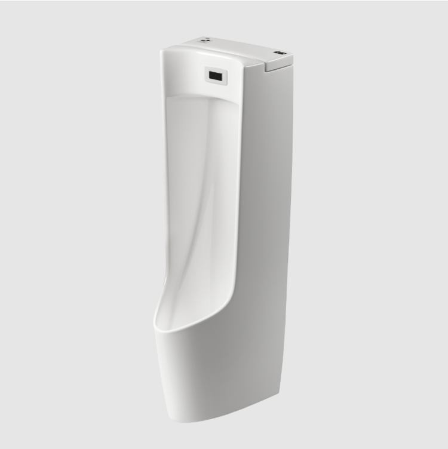
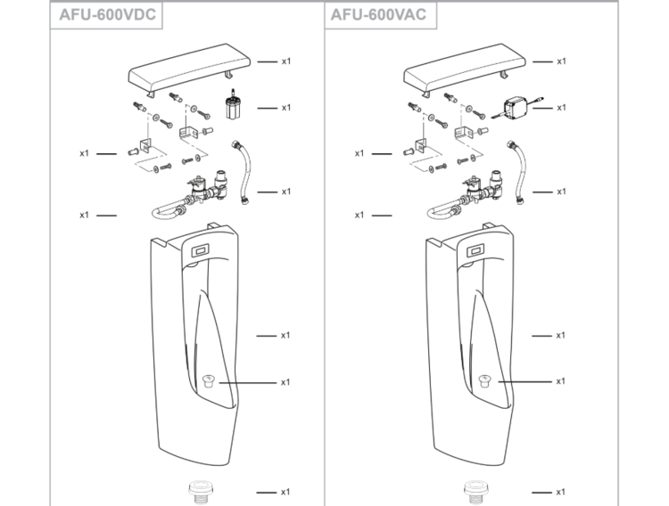

Bồn tiểu nam INAX AFU-600V (DC) là dòng bồn tiểu cảm ứng cao cấp Nhật Bản, mang đến tiện nghi, sang trọng và hiện đại cho không gian công cộng như trung tâm thương mại, văn phòng,... Với thiết kế thân dài và vành bồn cao, sản phẩm không chỉ có tính thẩm mỹ cao mà còn hạn chế bắn bẩn hiệu quả.Đặc điểm nổi bật của bồn tiểu cảm ứng AFU-600V (DC)Công nghệ Aqua Ceramic độc quyền: Bề mặt sứ của bồn tiểu cảm ứng AFU-600V (DC) được ứng dụng công nghệ men sứ độc quyền INAX, giúp chống bám bẩn, ngăn ngừa các vết ố vàng và giữ cho sản phẩm luôn trắng sáng như mới.Chất liệu sứ cao cấp: AFU-600V (DC) được sản xuất bằng chất liệu sứ cao cấp theo tiêu chuẩn khắt khe của INAX Nhật Bản. Nhờ đó, sản phẩm có khả năng chịu lực tốt và có độ bền cao trước các tác động ngoại lực.“Nhạy” cảm ứng: Van xả cảm ứng của bệ tiểu nam AFU-600V (DC)hoạt động chính xác và hiệu quả, giúp tiết kiệm tối đa lượng điện và nước tiêu thụ cho công trình. Mắt cảm ứng được lắp sau kính giúp đảm bảo độ bền và tính thẩm mỹ lâu dài.Thiết kế sáng bóng, trơn nhẵn: Với thiết kế phần men sứ trơn nhẵn, sản phẩm giúp việc vệ sinh, lau rửa trở nên dễ dàng hơn, hạn chế sử dụng các chất tẩy rửa độc hại, bảo vệ sức khỏe người dùng.Đa dạng vị trí lắp đặt: Bồn tiểu nam cảm ứng AFU-600V (DC) sử dụng nguồn điện từ 4 pin AA x 1.5V nên thuận tiện cho việc lắp đặt ở các vị trí không có sẵn đường điện.Video giới thiệu công nghệ Aqua Ceramic độc quyền INAXBản vẽ lắp đặt bồn tiểu cảm ứng AFU-600V (DC)File hướng dẫn lắp đặt bồn tiểu nam AFU-600V (DC)Với thiết kế thân bồn đẹp mắt, vành bồn cao cùng công nghệ Aqua Ceramic chống bám bẩn, kháng khuẩn, bồn tiểu nam AFU-600V (DC) mang đến cho bạn không gian phòng vệ sinh sang trọng, đẹp mắt và sạch sẽ.Thông số kỹ thuật bồn tiểu nam cảm ứng AFU-600V (DC)Mã sản phẩmAFU-600VDCLoại sản phẩmBồn tiểu nam cảm ứng treo tườngKích thước370 x 420 x 1140 mm (Rộng x Sâu x Cao)Thương hiệuINAXCông nghệ menAqua Ceramic siêu chống bám bẩn, giữ bề mặt sứ luôn trắng sáng suốt 100 nămKiểu xảHệ thống xả đẩy mạnh mẽ, cuốn trôi mọi vết bẩn một cách nhanh chóng và vệ sinhNguồn điệnSử dụng 4 pin AA x 1.5V (VDC) dễ dàng thay thế, an toàn và tiện lợi khi lắp đặtMàu sắcTrắngKhác- Hotline tư vấn và bảo hành: 18006633
Bồn tiểu nam AFU-600V(DC)
Bồn tiểu thương hiệu INAX.
Đã cập nhật danh sách yêu thích.
DANH MỤC: Bồn tiểu
MÃ SẢN PHẨM: AFU-600V(DC)
DEPTH: 420mm
HEIGHT: 370mm
WIDTH: 1140mm
Bồn tiểu nam INAX AFU-600V (DC) là dòng bồn tiểu cảm ứng cao cấp Nhật Bản, mang đến tiện nghi, sang trọng và hiện đại cho không gian công cộng như trung tâm thương mại, văn phòng,... Với thiết kế thân dài và vành bồn cao, sản phẩm không chỉ có tính thẩm mỹ cao mà còn hạn chế bắn bẩn hiệu quả.Đặc điểm nổi bật của bồn tiểu cảm ứng AFU-600V (DC)Công nghệ Aqua Ceramic độc quyền: Bề mặt sứ của bồn tiểu cảm ứng AFU-600V (DC) được ứng dụng công nghệ men sứ độc quyền INAX, giúp chống bám bẩn, ngăn ngừa các vết ố vàng và giữ cho sản phẩm luôn trắng sáng như mới.Chất liệu sứ cao cấp: AFU-600V (DC) được sản xuất bằng chất liệu sứ cao cấp theo tiêu chuẩn khắt khe của INAX Nhật Bản. Nhờ đó, sản phẩm có khả năng chịu lực tốt và có độ bền cao trước các tác động ngoại lực.“Nhạy” cảm ứng: Van xả cảm ứng của bệ tiểu nam AFU-600V (DC)hoạt động chính xác và hiệu quả, giúp tiết kiệm tối đa lượng điện và nước tiêu thụ cho công trình. Mắt cảm ứng được lắp sau kính giúp đảm bảo độ bền và tính thẩm mỹ lâu dài.Thiết kế sáng bóng, trơn nhẵn: Với thiết kế phần men sứ trơn nhẵn, sản phẩm giúp việc vệ sinh, lau rửa trở nên dễ dàng hơn, hạn chế sử dụng các chất tẩy rửa độc hại, bảo vệ sức khỏe người dùng.Đa dạng vị trí lắp đặt: Bồn tiểu nam cảm ứng AFU-600V (DC) sử dụng nguồn điện từ 4 pin AA x 1.5V nên thuận tiện cho việc lắp đặt ở các vị trí không có sẵn đường điện.Video giới thiệu công nghệ Aqua Ceramic độc quyền INAXBản vẽ lắp đặt bồn tiểu cảm ứng AFU-600V (DC)File hướng dẫn lắp đặt bồn tiểu nam AFU-600V (DC)Với thiết kế thân bồn đẹp mắt, vành bồn cao cùng công nghệ Aqua Ceramic chống bám bẩn, kháng khuẩn, bồn tiểu nam AFU-600V (DC) mang đến cho bạn không gian phòng vệ sinh sang trọng, đẹp mắt và sạch sẽ.Thông số kỹ thuật bồn tiểu nam cảm ứng AFU-600V (DC)Mã sản phẩmAFU-600VDCLoại sản phẩmBồn tiểu nam cảm ứng treo tườngKích thước370 x 420 x 1140 mm (Rộng x Sâu x Cao)Thương hiệuINAXCông nghệ menAqua Ceramic siêu chống bám bẩn, giữ bề mặt sứ luôn trắng sáng suốt 100 nămKiểu xảHệ thống xả đẩy mạnh mẽ, cuốn trôi mọi vết bẩn một cách nhanh chóng và vệ sinhNguồn điệnSử dụng 4 pin AA x 1.5V (VDC) dễ dàng thay thế, an toàn và tiện lợi khi lắp đặtMàu sắcTrắngKhác- Hotline tư vấn và bảo hành: 18006633
DANH MỤC: Bồn tiểu
MÃ SẢN PHẨM: AFU-600V(DC)
DEPTH: 420mm
HEIGHT: 370mm
WIDTH: 1140mm